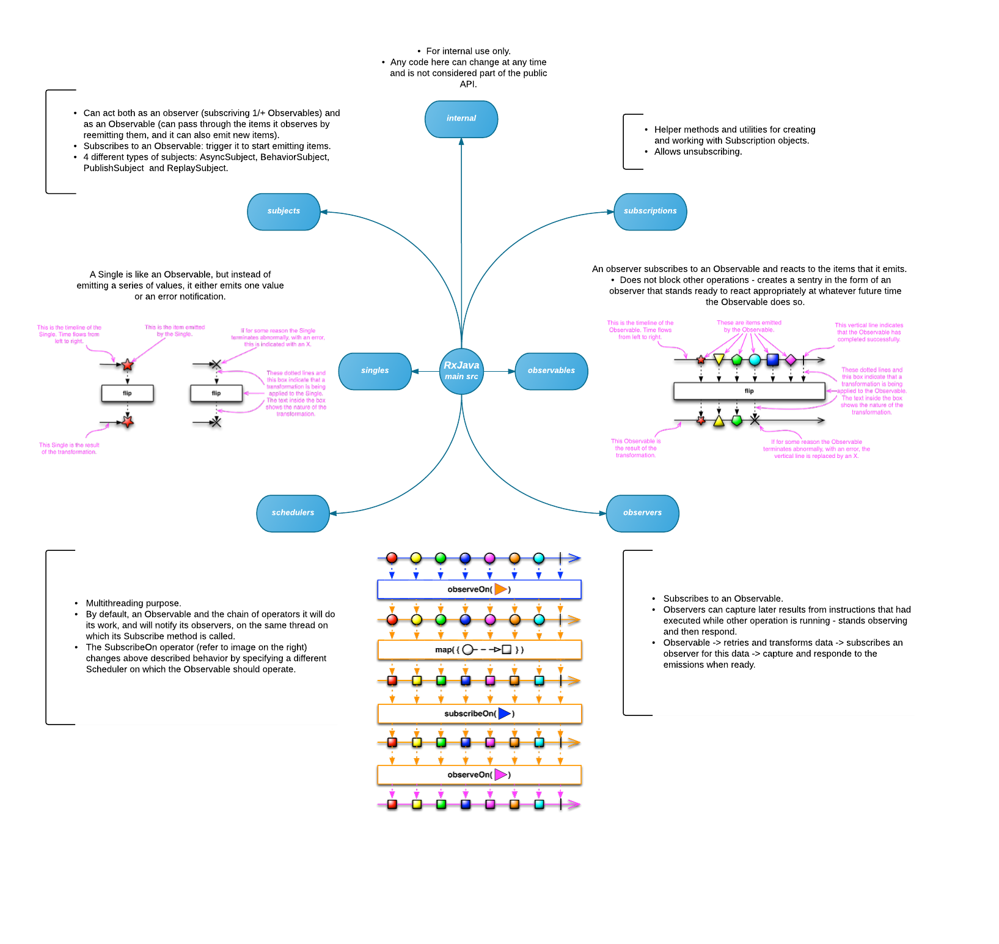
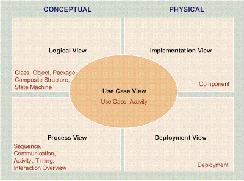
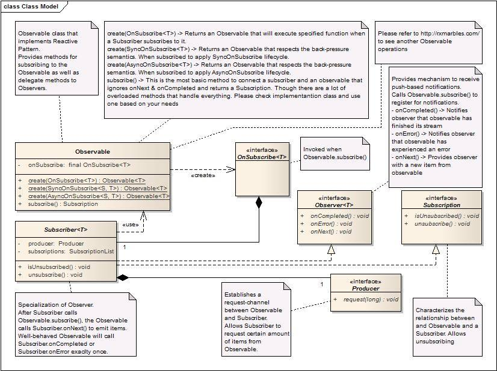
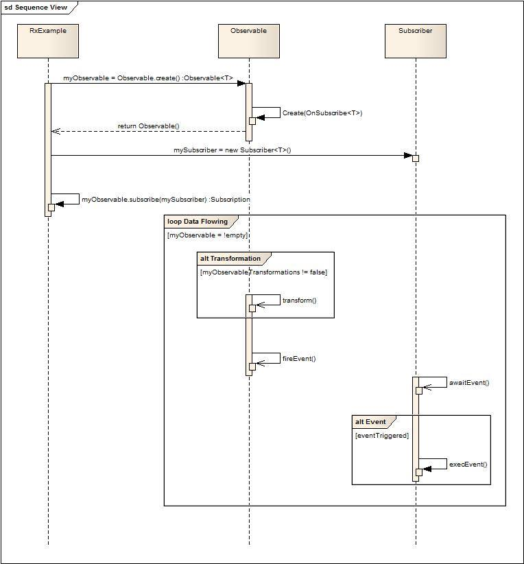
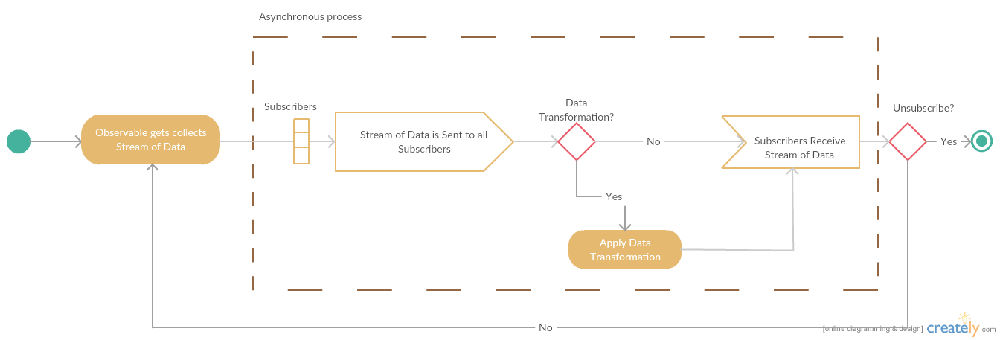
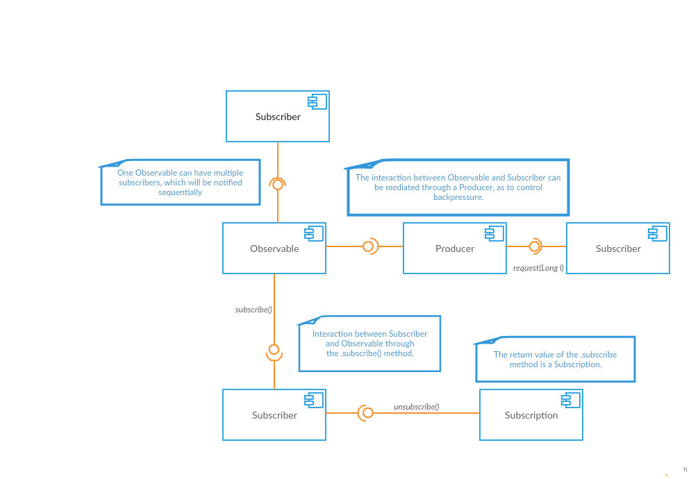

ReactiveX is a library for composing asynchronous and event-based programs by using observable sequences. RxJava
is a Java VM implementation of ReactiveX (Reactive Extensions)
Introduction
Software have changed dramatically in recent years. Only a few years ago a large application had tens of servers,
seconds of response time, hours of offline maintenance and gigabytes of data. Nowadays, systems built as
Reactive Systems are more flexible, loosely-coupled and scalable. This makes them easier to develop, liable
to change and significantly more tolerant to failure. Reactive Systems are highly responsive, giving users
effective interactive feedback.
Back to the very beginning, what is reactive programming? Is programming with asynchronous data streams.
What do we mean with "stream"? A sequence of ongoing events ordered in time: it can emit three different things:
a value (of some type), an error, or a "completed" signal.
These emitted events can only be captured asynchronously, by defining a function that will execute when a value
is emitted, another function when an error is emitted, and another function when 'completed' is emitted -
observers! The "listening" to the stream is called subscribing.
The stream is the subject/observable being observed (Observer Design Pattern).
In RxJava an object that implements the Observer interface subscribes to an object of the Observable class. Then
that subscriber reacts to whatever item or sequence of items the Observable object emits.
This pattern facilitates concurrent operations because it does not need to block while waiting for the Observable
to emit objects, but instead it creates a sentry in the form of a subscriber that stands ready to react appropriately
at whatever future time the Observable does so.
The Observable contract
According to The Observable Contract, an Observable communicates with its observers with the following notifications:
OnNext() - transmits an item that is emitted by the Observable to the observer.
OnCompleted() - indicates that the Observable has completed successfully and that it will be emitting no
further items.
OnError() - indicates that the Observable has terminated with a specified error condition and that it will
be emitting no further items.
OnSubscribe() (optional) - indicates that the Observable is ready to accept Request notifications from the
observer.
In reverse, an observer communicates with its Observable by means of the following notifications:
Subscribe - indicates that the observer is ready to receive notifications from the Observable.
Unsubscribe - indicates that the observer no longer wants to receive notifications from the Observable.
Request (optional) - indicates the number of additional OnNext() notifications that the observer wants from
the Observable.
Reactive programming allows the developer to create asynchronous applications and based on a simplified form
events. Apps nowadays have an abundance of real-time events of every kind that enable a highly interactive
experience to the user. We need tools for properly dealing with that, and Reactive Programming is an answer.
Package Overview
The following diagram gives an overview of the most important packages of RxJava and what are their main functionalities:

Figure 1 - Diagram illustrating some important packages of RxJava.
Architectural Style
Event Based Systems
You can't talk about Reactive Extensions without talking about Event-based systems.
In an event-based system, individual components announce data which they wish to share with others. These other
components may declare interest in this data feed. This is commonly called the Publish-Subscribe pattern
(Pub-sub).
This is exactly what happens when you implement with reactive extensions. In this case, our publisher (the one
who emits data), is called the Observable, while the subscriber can be called the Observer,
or Subscriber.
Filling in the Blank
Whether you call this a Publish-subscribe pattern or the Observer pattern is
debaeable. Actually, one can be considered a concrete implementation of the other. So, to get a little deeper
into the implementation of RXJava, let's talk a little bit about the GoF Observer pattern:
Figure 2 - Diagram of the GoF observer pattern.
The Gang of Four observer pattern describes the behavior of an object, called the Subject, which maintains
a collection of dependents, called Observers. The subject is able to notify the observer automatically of
any change of states that may occur, usually by calling one of their methods.
Reactive Extensions extend the observer pattern, modernizing it to handle asynchronous behavior, as well as streams
of data and/or events, instead of just a simple scalar callback.
The Observable type adds two missing semantics to the GoF observer pattern:
The ability for the producer to signal to the consumer that there is no more data available (a for-each loop
on an Iterable completes and returns normally in such a case; an Observable calls its observer’s onCompleted() method)
The ability for the producer to signal to the consumer that an error has occurred (an Iterable throws an
exception if an error takes place during iteration; an Observable calls its observer’s onError() method)
In a brief way, Observables fill the gap by being the ideal way to access asynchronous sequences of multiple
items.
A reactive Observable can be compared to a simple Iterator, which is used every day by programmers
all around the world, experienced or not.
The dual of a pull-based Iterator is a push-based Observable. The same way that you would next() on an Iterable, you onNext() on an Observable. The two of them can be thought about the same
way for simplicity, however, the Observable is asynchronous, and it pushes the data on to its subscribers.
This is how Reactive took care of the multiple item problem.
This is the way Reactive Extensions harmonize the Iterable and Observable types for handling streams of data. What about
asynchronous behavior?
For asynchronicity, the JVM offers the Future interface, since Java 5.
Future objects promise to hold the result of something that (maybe) hasn't occurred yet.
RX’s main advantage over futures is that RxJava works on streams of zero or more items including never-ending streams with
an infinite number of items. It can do so asynchronously and with little or no thread blocking. Futures,
on the other hand, are single use. Each Future holds a single result and that's it.
The following table sums up how Observebles fit in the mix.
Table 1. Observables, Iterables and Futures
Single Items
Multiple Items
Synchronous
T getData()
Iterable<T> getData()
Asynchronous
Future<T> getData()
Observable<T> getData()
Code Example
To achieve better understanding, lets look ate a code example. a simple implementation of RXJava:
import java.util.Arrays;
import java.util.List;
import rx.Observable;
public class RxJavaExample {
public static void main(String[] args) {
//create a list
List<String> list = Arrays.asList("Android", "Ubuntu", "Mac OS");
//Create an Observable
Observable<List<String>> listObservable = Observable.just(list);
//Register an Observer
listObservable.subscribe(new Observer<List>String() }
@Override
public void onCompleted() {}
@Override
public void onError(Throwable e) {}
@Override
public void onNext(List<String> list) {
System.out.println(list);
}
});
}
}
Domain Diagram
Figure 3 - Domain Diagram of RxJava
Design Patterns
The Strategy Pattern
It is a GoF design pattern and belongs to Behavioural patterns since it defines a way of
controlling communication between classes. It's used to create an interchangeable family of algorithms
chosen at runtime. It allows scalability and to dynamically behave based on user preferences. RxJava used
in order to allow them to define their different subscriptions type and choose them at runtime based on user implementation.
Much likely a Strategy, Template method also belongs to Behavioural patterns. It differs from Strategy
mainly because it is used to define a basic/common algorithm and allowing the implementation of individuals to be changed,
while in Strategy there's no basic algorithm. Correct usage allows reduction of redundant code. RxJava used this so
they could define their Subject common algorithm and specialize their non common algorithms.
Being, also, a GoF pattern but belonging to Creational patterns. The Singleton is used to control
class instantiation. Thus, ensuring only one instance of a certain class is created.
It's a GoF pattern. It's also a Creational pattern used to control class instantiation.
Used to replace class constructors in order to the type of the object instantiated can be determined at runtime.
In RxJava they, in this case, wanted to instantiate different objects based on their runtime needs. They decided to use this pattern.
UML diagrams are useful design tools because they can provide different views of the system behavior
which can be difficult to extract from specifications.
The 4+1 view offers a different perspective to classify and apply UML diagrams. The 4+1 view is essentially
how a system can be viewed from a software life cycle perspective. Each of these views represents
how a system can be modeled.
These different views are:
Design/Logical View: The design view of a system is the structural view of the system. This gives
an idea of what a given system is made up of. Class diagrams and object diagrams form the design
view of the system.
Process View: The dynamic behavior of a system can be seen using the process view. The different
diagrams such as the state diagram, activity diagram, sequence diagram, and collaboration diagram
are used in this view.
Component View: This view shows the grouped modules of a given system modeled using the component
diagram.
Deployment View: The deployment diagram of UML is used to identify the deployment modules for a given
system.
Use case View: Finally, use case view. Use case UML diagrams are used to view a system from this
perspective as a set of discrete activities or transactions.
Next Figure demonstrates the different views of this "4+1 Architectural View".

Figure 4 - 4+1 Architectural View.
In this context we developed the following UML diagrams for RxJava example.
UML Diagrams
Logical View
The following diagram shows the core classes of RxJava. There could be a lot more classes though they
are only fancy features that make RxJava a really great asynchronous stream library.
An Observable is what has the data while a Subscriber, which is a specialization of an Observer, is the
consumer. This connection between them is a Subscription.

Figure 5 - Class Diagram for RxJava core.
This sequence diagram shows what would be a developer's brief perspective while implementing RxJava in
his software.
After creating an Observable and a Subscriber all he has to do is subscribe the Subscriber object to
the Observable object. Then, magically (by triggering events), RxJava takes care of sending data
from the Observable to its Subscribers, while he has data.

Figure 6 - Sequence Diagram for RxJava core.
Physical View
Below diagram illustrates an example of how a deployment diagram can be seen for RxJava.
Figure 7 - Deployment Diagram for RxJava.
Process View
The basic activity flow of RX Java explains a basic interaction between an Observable object and a Subscriber
(or a simple Observer).
When a stream of data arrives, an Observable is created and that data is made available to all subscribers.
The observer has no knowledge of how many subscribers are listening to the data flow. Through the
subscribe() method, the Subscribers can reach the data flow, and possibly apply transformations
to the data.
The subscriber can unsubscribe to the data flow, and thus endind this process.

Figure 8 - Activity Diagram.
Development View
You can't talk about RX Java, or any kind of Reactive extention without talking about the Observable
object, represented in the center of the Component Diagram shown below.
An Observable can interact with any number of subscribers, that basicly listen to the data flow. The
return value of the subscribe() is a Subscription. This object allows you to unsubscribe() to the published events.
The pub-sub communication can also be mediated through a Produces, as to control the amount of data that
is beeing published.

Figure 9. - Component Diagram.
Building Large, Scalable Systems with RXJava
RXJava is already a proven programming technique within large enterprises, in order to develop scalable, highly concurrent systems.
We studied a couple of examples, to show how these systems were able to grow and scale using this technique.
Netflix
RX Java was created by Netflix engineers, when they began to face problems related to scalability and company growth.
Netflix felt the need to completely change the architecture of their system because their API was not able to handle te large amount of requests coming from millions of devices all over the globe. RX Java was developed to solve this problem, and quickly became a part of the company's development culture. Find out how by clicking the button below.
Airbnb's mobile application is constantly growing, compeling their software engineers to be in continuous update.
RxJava became an important implementation in the Airbnb app because it simplifies the development, raising the level of abstraction around threading, that if not correctly implemented, can cause some of the most difficult bugs to debug and fix. Click below to find out more about the challenges and benefits around Airbnb RxJava implementation in mobile app.
At Soundcloud everything moves around audio tracks. The size of information they have to deal per second is huge.
They coulnd't make an application, that worked well and met the clients needs, with the common method of programming.
Click More to know how they did it.
Github for Desktop is a Github application that allows people to control their repositories in an efficient way.
Since it's relatively new, Github dev team knew the problems they would face. Then they decided to use Rx from the begginning.
Click More to know what they did to overcome obstacles.